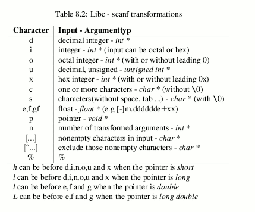

Just as printf(...) is used for formatted output you can use scanf(...) for formatted input.
format can include rules on how to format the input arguments
(see table 8.2 on page  ). It can also include:
). It can also include:

Table 8.2: Libc - scanf transformations